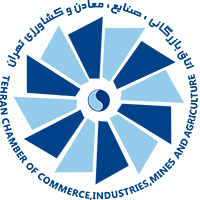
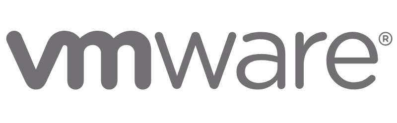

Currently studyingM.A. International ManagementHochschule Fresenius · Cologne
Commercial Operations & B2B Coordination
International Management student in Cologne with 10+ years of procurement, commercial coordination and industrial project experience.
APPLICATION FOCUS
Working Student · Global B2B Shop
BIRKENSTOCK · B2B Operations · Data · Cross-functional Coordination
Current studiesM.A. International ManagementHochschule Fresenius · Cologne
Location & work statusCologne · GermanyOpen to Working Student opportunities
Professional experience10+ yearsProcurement, commercial operations & projects
Industries
Oil & GasPetrochemicalMetals & MiningIndustrial AutomationEnergyEPC

Targeting B2B & commercial operationsDigital B2B · Data · KPI Reporting · Coordination
10+Years of procurement & commercial experience
€10M+Procurement portfolios managed
30+International suppliers
8National-scale EPC & industrial projects
~10%Procurement cost reduction
~50%Efficiency & reporting improvement
WHY BIRKENSTOCK
Why my background transfers well to a global B2B environment.
Commercial discipline
My background combines procurement, commercial evaluation, supplier communication and structured follow-up — a strong foundation for supporting B2B operations.
International B2B
I have managed procurement portfolios above €10M and coordinated with 30+ suppliers across Europe and Asia, giving me practical experience in international B2B relationships.
Data & process mindset
Advanced Excel, KPI reporting, procurement documentation and process improvements have been central to my work and are transferable to digital B2B operations.
International Management
I am studying International Management in Cologne and want to apply that business perspective in a practical Working Student role.
PROFESSIONAL EXPERIENCE
Procurement experience that built strong operational discipline.
Mar 2026 — Present
CURRENT EDUCATION
M.A. International Management
Hochschule Fresenius · Cologne, Germany
2017 — Feb 2026
PROCUREMENT · LEADERSHIP
Procurement Manager & Executive Coordinator
Petro Sanat Lidoma Engineering Services (PSL) · Tehran, Iran
2016 — 2017
PROCUREMENT
Procurement Specialist
Petro Sanat Lidoma Engineering Services (PSL) · Tehran, Iran
PROFILE MATCH
Position requirements compared with my profile.
| Role requirement | Evidence from my profile | Match |
|---|---|---|
| Currently enrolled in a relevant degree | M.A. International Management at Hochschule Fresenius in Cologne. | FIT |
| Interest in digital B2B / commercial operations | 10+ years of procurement, supplier management, commercial evaluation and project coordination. | FIT |
| Analytical & numerical skills | Advanced Excel, procurement analytics, bid evaluation, cost optimization and KPI reporting. | FIT |
| Structured, reliable working style | Managed procurement cycles, supplier follow-up, documentation and project coordination. | FIT |
| Cross-functional collaboration | Worked across procurement, engineering, manufacturing, logistics, clients and suppliers. | FIT |
| International environment | 30+ international suppliers across Europe and Asia and multi-stakeholder EPC projects. | FIT |
| English | English C1; TOEFL 101/120. | FIT |
| German | German A2 and currently improving. | DEVELOPING |
| Direct B2B e-commerce / shop platform experience | No direct Shopify, Magento, PIM or CMS experience is claimed. | GAP |
| Product / master data | Strong experience with structured procurement and supplier data; direct product-master-data experience is transferable rather than direct. | TRANSFER |
SKILLS & LANGUAGES
Core capabilities & tools.
Procurement & Supply Chain
Strategic Sourcing · Procurement Planning · Tender & RFQ Management · Supplier Qualification · International Purchasing · Bid Evaluation · Cost Optimization · Procurement Analytics · Customs Clearance · Inspection & FAT
Project & Commercial Coordination
EPC Project Delivery · Engineering Coordination · Scheduling & Planning · Manufacturing Coordination · Project Documentation · Contract Negotiation · Commercial Proposals · INCOTERMS · Stakeholder Management
Technical & Digital Tools
Advanced Excel · MS Project · PowerPoint · Visio · Outlook · Aspen HYSYS · MATLAB / Simulink · Industrial Automation & Control Systems
Languages
PersianNative
EnglishC1
GermanA2
ArabicA1
TurkishA2
CERTIFICATIONS
Selected professional training & certifications.

Procurement & Import of Goods
Tehran Chamber of Commerce · 2019
MPORG
EPC Contracts, Taxation & Social Security
Plan and Budget Organization of Iran · 2024
Stepping into Leadership Workshop
Hochschule Fresenius · 2026

VMware Certified Professional – Data Center Virtualization (VCP-DCV 8)
VMware · 2025
Microsoft Certified Systems Administrator (MCSA)
Microsoft · 2025
AI Study Buddy – Research in Academic Writing
Hochschule Fresenius · 2026
PUBLICATIONAn investigation on the viscosity reduction of Iranian heavy crude oil through dilution method
View ↗
CONTACT
Open to Working Student opportunities in Cologne and NRW.
Based in Cologne and open to Working Student roles in digital B2B, commercial operations, procurement, supply chain and project coordination.
Emailalisoleimani71@gmail.comGet in touch directly
↗
Websitealisoleimani.dePortfolio & professional profile
↗
LinkedInlinkedin.com/in/alisoleimani-deProfessional network
↗
Ali Soleimani